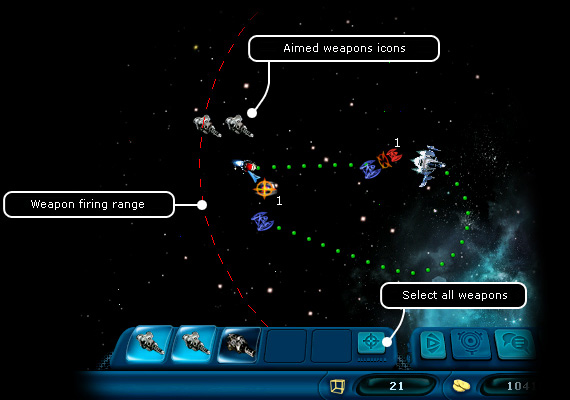
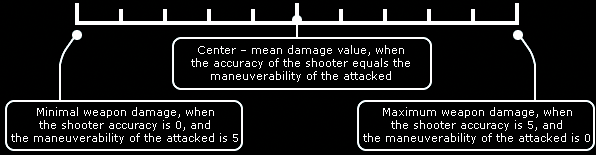

Ranger manual
> Space screen >
Shoot
|
Ranger manual
> Space screen >
Shoot
|
| Shoot The player can fight other ships in the one the two following modes: 1. In the Chase mode "Autocombat". In this case the battle proceeds automatically, and the player only has to watch it, expecting the victory. This variant is useful, if you are fighting the only one ship and are completely sure of your superiority. 2. In the manual mode. In this case the player controls the weapon guiding and the flight of his ship during each turn. In the manual mode the player has to make the weapons battle-ready i.e. open the (weapon panel), aim weapons at the target, and start shooting. You can shoot at several targets simultaneously, if you assign a separate weapon to each target. Also, you can aim several weapons at one target. On the contrary, you can't assign one gun to several targets, therefore it is useful to have as many as possible guns on board! |

To aim a gun at the target: 1. Click a certain weapon. A circle indicating the killing zone of this weapon. The mouse cursor will change its appearance. 2. Click the target. There will be an icon over the guided weapon over the target. Note. If the target is out of the killing zone, you won't be able to aim the weapon. To aim all possible weapons to a target: 1. Press 'Select all weapons' (~). 2. Click the target. The icons of the weapons, which the ship managed to aim (i.e. their killing zone is reaching the target). To select all weapons, which haven't been guided yet: • Press "+". To cancel the aiming at a target: • Click the icon of the guided gun on the weapon panel. To shoot the guided weapons: • Press the 'End of turn' button. Extracting minerals from asteroids  You can shoot
not only at other ships. Shooting at asteroids, you can extract minerals from them.
Each asteroid hides some store of natural resources.
If you shoot at an asteroid carefully, the resources drop down into the space almost undamaged
in form of minerals, and you can later pick them up
or shoot down once again, in order to divide into even smaller parts. You can sell the gathered minerals
in the trading center on
any inhabited planet. You can shoot
not only at other ships. Shooting at asteroids, you can extract minerals from them.
Each asteroid hides some store of natural resources.
If you shoot at an asteroid carefully, the resources drop down into the space almost undamaged
in form of minerals, and you can later pick them up
or shoot down once again, in order to divide into even smaller parts. You can sell the gathered minerals
in the trading center on
any inhabited planet. |
|
For those who wishes to get to know the game mechanics: How the damage in combat is calculated. Each weapon has its range of damage; there is minimal and maximal damage. You can learn the certain values in a pop-up window, which appears, if you hover the mouse over the weapon. The damage is influenced not only by the weapon parameters, but also by two pilot skills: accuracy and maneuverability. When you shoot at enemy, these two skills (your accuracy and enemy's maneuverability) start interacting. As two skills are used, you can receive 10 combinations of the starting points of damages. Let's imagine the damages in form of a graduated scale with ten grades, where the minimal damage is the origin, and the maximal - the end of the scale, then we can represent the damage count in form of a diagram: |

| The starting point of the damages is marked depending on the values of skills. Then the calculation of shot randomness happens. Example 1
Example 2
Example 3
When the damaging power of a weapon is calculated, the program subtracts from this number the blocking value of the damage of the defense generator and the value of the protection parameter of the hull. Finally we receive the real amount of damage. Note. Some nonstandard equipment (artifacts) can influence the weapon accuracy. These examples deliver a good proof for importance of accuracy and maneuverability upgrading for a win in combat. |
|
|